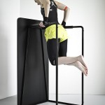
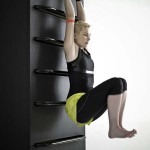
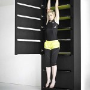

Все мы знаем, как сложно поддерживать себя в форме. У нас часто нет времени, чтобы пойти в спортзал, хотя, если объективно, это все отговорки. Большинству из нас больше не нравится собирать сумку и ехать в спортзал, это занимает гораздо больше времени, чем сама тренировка. Именно поэтому домашнее фитнес-оборудование предпочтительнее годового абонемента.
Сегодня мы представляем Вашему вниманию домашнее фитнес-оборудования для комфортных занятий спортом. Дизайнером этой спортивной стенки является Lucie Koldova. Уникальность устройства в том, что оно не только многофункционально, но и отлично впишется в интерьер современного дома. Этот большой комплекс сделан в виде прямоугольника со стальными поручнями. При упражнениях Вы сможете использовать вес и гибкость собственного тела для достижения максимального результата.


